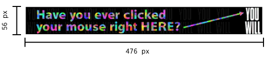

Web Design Through the Years
This project is intended to be an interactive and educational tool to express changes and trends in web design over the past two decades.
Click through the timeline on the left for a brief description and content rendered as it would be during the time period
Early 90s_☐✕
The first ever web banner
 On Christmas of 1990, Swiss researcher Tim Berners-Lee created the world’s first Web Browser. In 1994, the first web banned in the world was created in 476 x56px. This period of web design was characterised by the most basic uses of HTML, flat markup, and those infamous blue hyperlinks.Floppy disks: the early CDs and today's save icon
Late 90s

Welcome banners like these were common in early geocities.
In 1995, David Bohnett and John Rezner founded the Beverly Hills web hosting company GeoCities, offering users 2MB of free disk space to host their website. This gave people opportunities to express their individuality. Everyone could code. A slew of creativity and the development of Flash led to neon colors, 3D buttons, splash pages, and spacer gifs. In the mid-1990s, less wasn’t more - more was more.This was an era of experimentation almost with the intention of being as illegible and eclectic as possible.
This may seem out of place now, but the dancing baby and drilling pokemon were among the most popular gifs used on late 90s websites.

Early 2000s
The early 2000s brought increased support for CSS. There was a decrease (though not a full elimination) of the use of garish colors and an increased appreciation for white space. Not to say there wasn’t still an outlet for that late 90s creativity through fonts, 3D gradient buttons, and bright colors to distinguish headings. Links became attached to icons rather than hyperlink text. Usability became more of a focus.
Icons made by Freepik from www.flaticon.com
This is what’s known as “the Industrial Revolution of the web” - with the rise of interactive content, multimedia applications, and the rise of the social web. More attention was paid to color distribution, typography, and content over Flash animation. Buying and selling was a major focus of the web at this time and so tags, keyword optimization, and easy to use search functions became important for businesses and profit. This was also the advent of Windows XP. While technically Windows XP launched in 2001, it until 2008 (overtaken by the broadly hated Windows Vista) and is still viewed as one of the most classic and successful iterations of Windows by Microsoft.This didn't mean the end of excess. There was still broad appreciation for skeumorphic design, making glossy buttons and tactile interfaces that reflected real life.
The Web Today
The modern web is essential and irreplaceable. No more 3D buttons! Minimalism and blended typography as well as generous use of large, high resolution images, and infinite scrolling have taken the center stage. Here we see responsive web design as mobile devices and tablets become a frequent way of navigating the web. Aesthetically, gradients and flat design have emerged in the late 2010s, as well as full page header images.
The way we think about the web is no longer as something hi-tech. It’s vital and therefore needs to be accessible, adaptable, and usable.